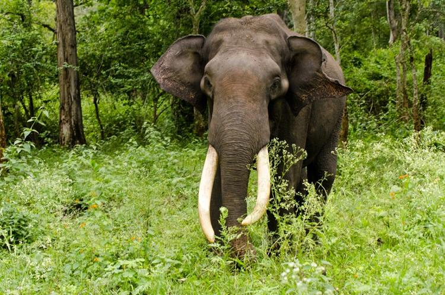
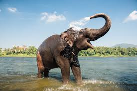
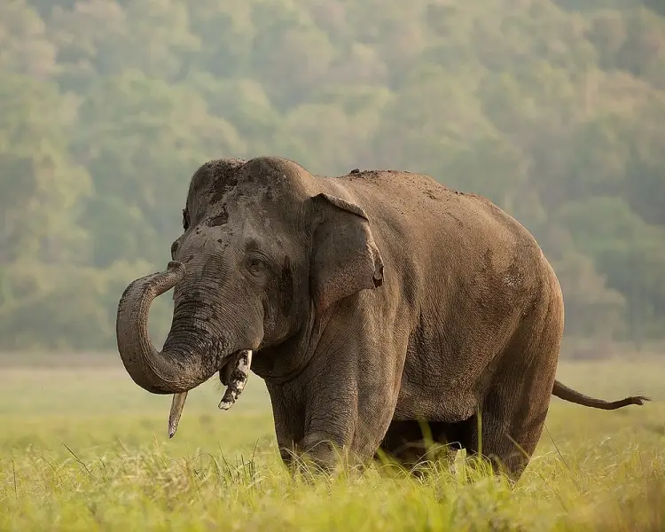

El elefante asiático (Elephas maximus) es el mamífero terrestre más grande de Asia, distribuido en 13 países. A diferencia de sus primos africanos, tienen orejas más pequeñas y solo algunos machos desarrollan grandes colmillos. Esta especie está catalogada como **en peligro de extinción** debido a la pérdida y fragmentación de su hábitat a causa de la expansión humana, lo que lleva a un aumento en los conflictos entre humanos y elefantes. También son amenazados por la caza furtiva para obtener marfil, aunque en menor medida que los elefantes africanos, y por la captura ilegal de crías para la domesticación. Su función es vital para mantener los ecosistemas forestales.


